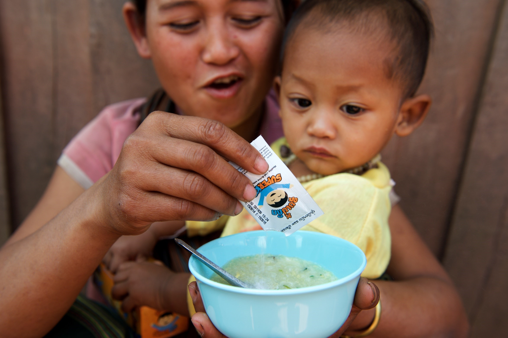
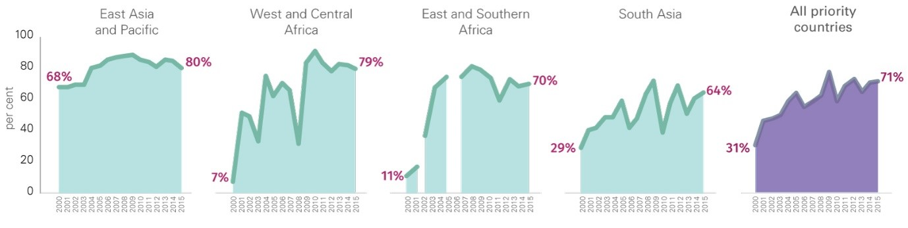

Home fortification with micronutrient powders offers one of the best opportunities for improving children’s diets when nutrient needs cannot be met with locally available foods alone.
Micronutrient powders (MNP) are best introduced as part of an IYCF strategy. When combined with counselling for mothers on complementary feeding, MNP interventions are particularly effective at improving children’s diets and preventing micronutrient deficiencies, such as iron-deficiency anaemia. In 2015, 76% of countries implemented MNP interventions integrated with IYCF programmes.
In 2015, MNP interventions reached more than 10 million children 6-59 months of age in 65 countries. The scale and reach of MNP programmes varied across the regions, with Latin America and the Caribbean, East Asia and the Pacific and South Asia accounting for two thirds of all children reached.
Vitamin A coverage has improved dramatically in the last 15 years. In 2000, less than one in three children was fully protected, while in 2015, more than two out of three children in need are reaping the benefits of full coverage.
Despite this success, two-dose coverage has been inconsistent between years and a number of regions have experienced wide fluctuations in coverage over a short period of time. These coverage gaps are particularly apparent in West and Central Africa, South Asia and Eastern and Southern Africa – and they jeopardize the survival and well-being of children in these regions.
